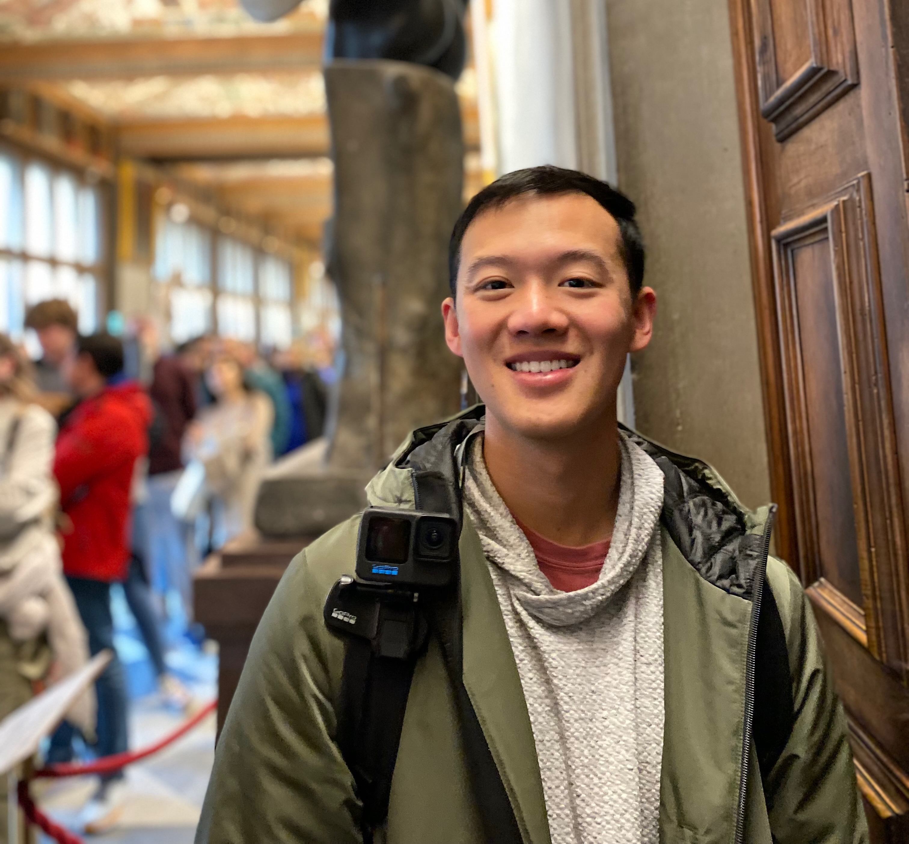

I am currently a 2nd-year physics Ph.D. Student at Purdue University. I am currently in Professor John Peterson’s research group researching clusters of galaxies and telescopes. We do this by comparing X-ray images against weak lensing maps. We also study the behavior of telescopes, their camera, and their control systems with the photon simulator PhoSim.
I received my B.S. in physics, specializing in astrophysics, from the University of California, Irvine. I did undergraduate research with Professor Simona Murgia on the indirect detection of dark matter.
I received my M.S. in Physics with a concentration in Astronomy from San Francisco State University, where I did research with Professor Adrienne Cool on looking for Red Stragglers and Sub Sub-Giants in globular clusters.
Additionally, I am currently a Signal Officer (25A) in the United States Army. I was a part of Operation Spartan Shield in 2023 and fought wildfires in Northern California in 2020. I have received awards such as the Army Commendation Medal and the California Commendation Medal.
I was born in San Francisco, CA, and I grew up in Yorba Linda, CA. From middle school to high school, I was heavily involved in band, where I was in the 2017 Rose Parade. I got interested in astronomy after I attended an observation astronomy course at Fullerton Community College. After seeing what the sky looks like from a place away from all light pollution, I was hooked on astronomy.
Outside of astronomy, the topics of my hobbies are very wide. Some include working on cars and motorcycles, trying to learn languages, hiking, traveling, and obstacle course racing. My ongoing hobby goals are to run a marathon on every continent and to participate in the World’s Toughest Mudder and score above 50 miles.